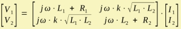

Transformer
Transformer is a four-pole component of the electrical domain. The primary winding is located at the poles s and t and the secondary winding at the poles u and v. Parameters
The admittance matrix of the transformer is given by:  V1 and V2 are the voltages across the primary and secondary windings. I1 and I2 are the respective currents to the transformer. L1 and L2 are the inductances and R1 and R2 their internal resistances, which can be specified optionally. The two coils are magnetically coupled by the coupling-factor k, which runs 0 < k < 1. The mutual inductance is M = k·√(L1·L2). If the k is close to one the voltage ratio would be V2/V1 = √(L2/L1) = n2/n1 with n1 and n2 primary and secondary windings. For ideal coupling there is the Coupler element. FormulaThe name of the parameters are equal to the formula-identifiers:
|